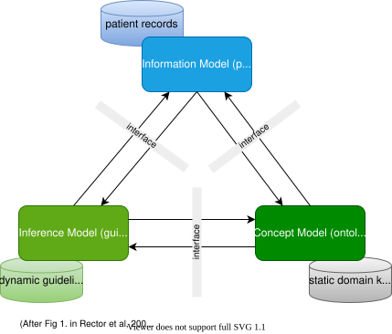

Introduction
openEHR Process and Planning Specifications
openEHR provides specifications for various models and languages to address the area of process and guideline-driven healthcare. These are as follows:
-
A plan definition formalism: the openEHR Task Planning specification (TP);
-
A guideline and rule language: the openEHR Decision Language specification (DL);
-
An expression language, which forms the basis for writing expressions and rules, defined by the openEHR Expression Language (EL);
-
A subject proxy service, which forms the bridge between Plans and Guidelines as consumers of subject data, and data sources: the openEHR Subject Proxy Service.
-
An underlying meta-model formalising information models, expression language and decision constructs, defined by the openEHR Basic Meta-Model;
Together these enable the authoring of care pathways, guidelines, executable care plans and in-application active forms. There is also an existing guideline language, Guideline Definition Language 2 (GDL2), which defines an earlier self-standing guideline format, on which some self-standing guidelines solutions are built. In some circumstances, such systems may be equivalently implemented in the future using TP/DL/EL instead of GDL2.
Many of the formal semantics of the DLM formalism come from experience with existing GDL2 deployments.
Prior Art
The openEHR Task Planning specification is conceptually close to the YAWL language (Yet Another Workflow Language) [1], as well as to the OMG BPMN and CMMN standards, which support different flavours of workflow. Many ideas were adopted and/or adapted from YAWL, of which the only deficiencies are: being agnostic on rule language and data persistence (both of central importance in healthcare IT), and no longer being actively maintained. The BPMN and CMMN standards have a weaker theoretical foundation, and were not originally conceived as being business analysis rather than executable formalisms; they also have only limited worker definition and allocation semantics, are weak on data persistence and have a rules expression formalism (DMN) that is relatively under-developed or tested in healthcare.
openEHR GDL2 and the more recent Decision Language may be compared to other languages developed in the health arena for expressing medical logic and rules, including HL7 Arden Syntax, Guideline Interchange Format [2], ProForma [3], as well as Decision Languages such as HL7 Gello and OMG DMN, and the HL7 Clinical Quality Language (CQL). These languages were not directly used, for various reasons including:
-
they do not support a clear distinction of ontic versus epistemic subject variables;
-
lack of an integrated plan / workflow formalism (all except DMN);
-
some are too procedural rather then declarative (Arden, GLIF);
-
current versions of some of these languages have been made specific to the HL7v3 RIM, a particular (and now obsolete) model of health information designed for message representation (GLIF 3.x, GELLO);
-
none of them support an integrated representation of the 'semantic stack' of process representation, decision logic, proxy data and data access;
-
the maintenance and support is unclear and/or limited.
Nevertheless, the design approach of Arden provided useful inspiration for the formalism described here, and indeed the Subject Proxy approach used in openEHR may be understood as a solution to the so-called 'curly braces problem' of Arden [4], i.e. the need to be able to bind rule logic to real-world variables. The ProForma language and underlying scientific analysis also has much to recommend it, and has been used as an important theoretical input to the specifications developed for openEHR. The HL7 CQL standard, although lacking a workflow language, provided useful insights including on temporal logic operators (originally described in [5]), data binding and general expression language design.
Relationship to Standards
The following table indicates the approximate correspondences between the openEHR process specifications and various published standards.
| openEHR Formalism | HL7 standard | OMG standard | Other |
|---|---|---|---|
CQL, FHIRpath? |
|||
CQL ELM |
DMN FEEL |
(numerous) |
|
(SDMN) |
The OMG group of standards are starting (as of 2020) to find use in the healthcare arena under the banner BPM+.
Theoretical References
Numerous publications have appeared over the last 30 years on process automation, decision support and related subjects, including within healthcare. A small number of seminal publications have been particularly valuable in the development of the openEHR Process-related specifications, including [6] and [1].
The first of these presented an often-cited diagram capturing the existence and challenges of representation between the various elements needed in computable guideline technology, shown below.

The authors enumerated many challenges directly relevant to the specifications described here, including the following:
-
the need for a coherent, symbolic means of referring to real-world entities from guidelines to patient data sources (originally: Need for inferential abstractions; Ambiguity of operational meaning);
-
the need to abstract away differing concrete representations of subject data e.g. 'blood pressure' in back-end systems (originally: Differences in encapsulation and form of expression);
-
the need to be able to convert quantitative data values to ranges, e.g. blood pressure of 190/110 to 'elevated blood pressure';
-
computation of a subject value from underlying values via a formula, e.g. BMI from patient height and weight;
-
temporal predicates, e.g. 'rising blood pressure', 'being on steroids for 3 months' etc.
This paper presaged the notion of the 'vritual medical record', which itself may be seen as a precursor for the Subject Proxy concept used here.
References
-
[1] A. H. M. T. Hofstede, W. M. P. van der Aalst, M. Adams, and N. Russell, Modern Business Process Automation: YAWL and its Support Environment. Springer-Verlag, 2010. doi: 10.1007/978-3-642-03121-2.
-
[2] L. Ohno-Machado et al., “The GuideLine Interchange Format - A Model for Representing Guidelines,” J Am Med Inform Assoc, pp. 357–372, Jul. 1998.
-
[3] D. R. Sutton and J. Fox, “The syntax and semantics of the PROforma guideline modeling language.,” J Am Med Inform Assoc., vol. 10(5), pp. 433–443, 2003, doi: 10.1197/jamia.M1264.
-
[4] M. Samwald, K. Fehre, J. de Bruin, and K.-P. Adlassnig, “The Arden Syntax standard for clinical decision support: Experiences and directions.,” Journal of Biomedical Informatics, vol. 45, pp. 711–718, Aug. 2012, [Online]. Available: https://www.sciencedirect.com/science/article/pii/S1532046412000226
-
[5] J. Allen, “Towards a general theory of actions and time,” Artificial Intelligence, vol. 23, no. 2, pp. 123–154, 1984.
-
[6] A. Rector, P. Johnson, S. Tu, C. Wroe, and J. Rogers, “Interface of Inference Models with Concept and Medical Record Models,” Jan. 2001, pp. 314–323. doi: 10.1007/3-540-48229-6_43.